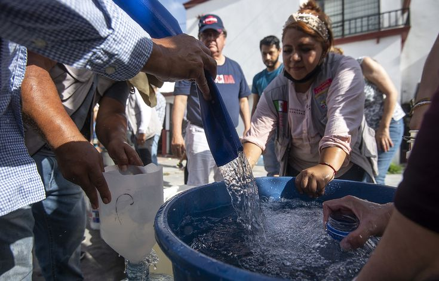
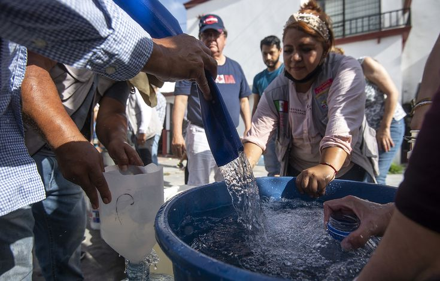

"La recolección de agua de lluvia es un
método sostenible que permite aprovechar el agua pluvial para diversos
usos, reduciendo la dependencia de fuentes convencionales y promoviendo
la conservación del recurso hídrico.
Este proceso implica varias etapas clave:
- CAPTACION: Través de techos, superficies impermeables o áreas
diseñadas para recolectar el agua de lluvia.
- CONDUCCION: El agua captada es dirigida mediante canaletas.
- FILTRACION Y TRATAMIENTO: El agua recolectada pasa por filtros que
eliminan sedimentos y contaminantes.
- ALMACENAMIENTO: Se guarda en Tanques o depósitos diseñados para evitar
la contaminación y la evaporación.
- DISTRIBUCION Y USO: El agua recolectada puede emplearse para riego,
limpieza, procesos industriales.
",
"Almacenamiento seguro" => "El almacenamiento seguro del agua es esencial
para preservar su calidad y evitar la contaminación, asegurando su
disponibilidad para consumo humano, uso doméstico e industrial.
Para ello, se emplean tanques y bidones diseñados específicamente para
proteger el agua de agentes externos y mantenerla en condiciones óptimas.",
];
foreach ($lista as $titulo => $descripcion) {
echo "

 
